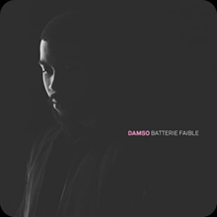
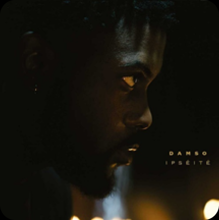

Ses albums
Batterie faible
Batterie faible sorti le 8 juillet 2016 est le premier album de Damso sous le label 92i de Booba qui a été son mentor pendant de nombreuses années
Ipséité
Ipséité sorti le 28 avril 2017 Les gens considèrent son second projet comme la réussite de sa carrière, cinq morceaux et l’album sont certifiés single de diamant 💎